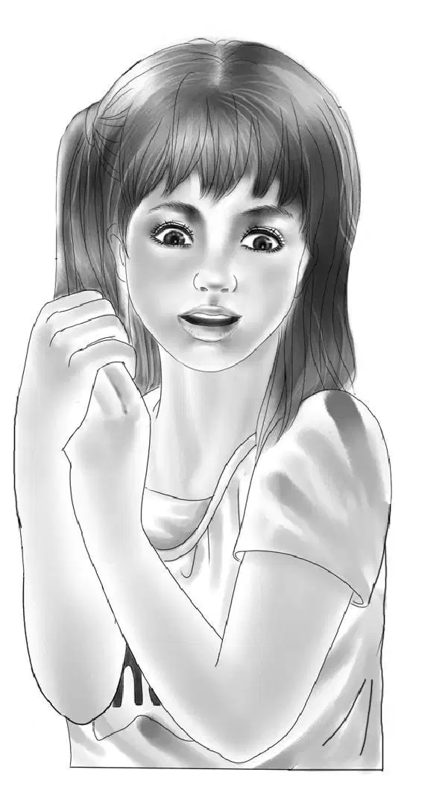
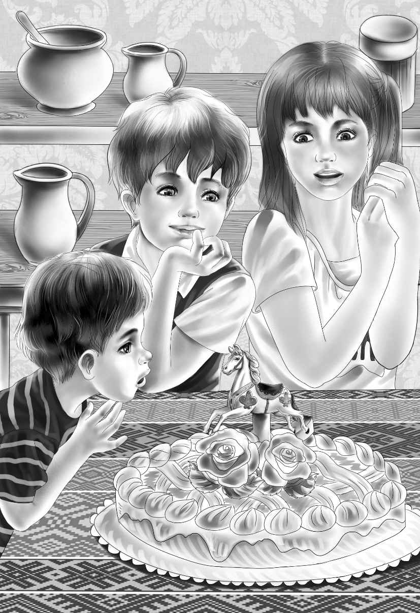
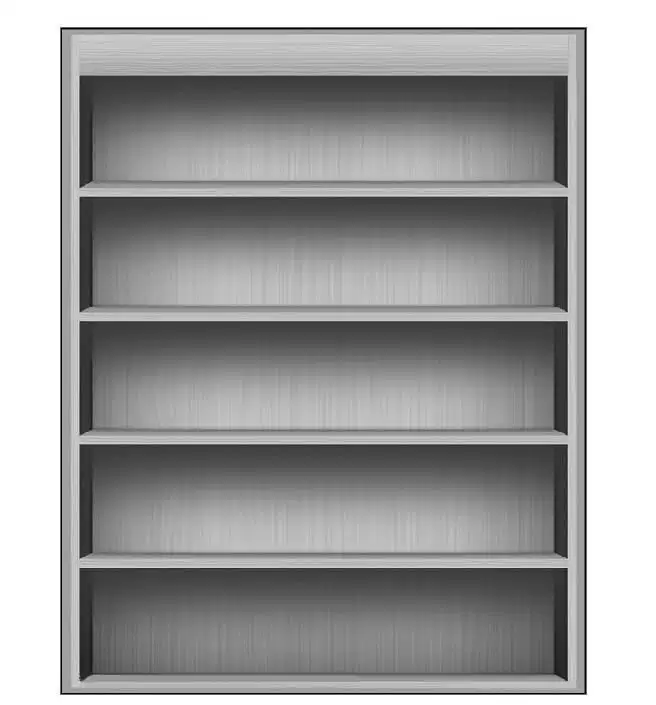
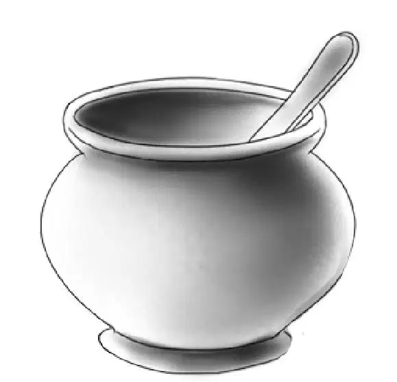
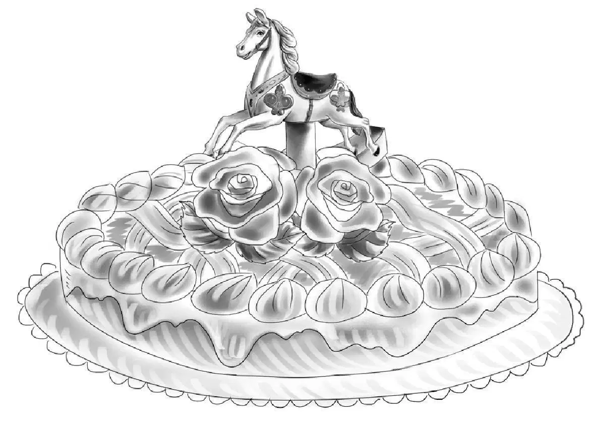

There was plenty to do to help Uncle Max get his restaurant open.
Jessie and Violet made bright yellow curtains for the big new window. Jeffrey and Sam wrote a story about the rocking horse. Mr. Alden had it printed on place mats with a picture of the rocking horse in the middle. Henry and Benny helped paint and make shelves to hold the old toys. Uncle Max put up his new sign outside.
The Rocking Horse Restaurant was to have its big opening day on a Saturday. There was an advertisement in the Greenfield News. On Friday Henry, the other Aldens, with Jeffrey and Sammy, took the old toys to Uncle Max. Jessie and Violet had flowers to put on the tables.
Jeffrey and Sammy carried Willy Carver’s wonderful old rocking horse from the Alden station wagon. Soon the horse was standing in its special place just inside the door at one side.Children coming in could see it and pat its nose but they could not ride it. That would have been too much for the old horse.
On opening day the restaurant was clean and shining. The new window let in the sunlight. Uncle Max had bought more tables and chairs. The new sign hung outside on an iron pole. Place mats were on the tables, and everything was ready.
The Aldens and the Beaches came before noon. Everyone was almost too excited to do anything. But they helped Uncle Max in every way they could. Jessie and Violet set the tables. Benny and the Beach boys peeled potatoes.

“You are certainly a lot of help to me,” said Uncle Max. “What should I do without you? ”
Sammy said, “I guess you think we act as if the Rocking Horse Restaurant is ours. Anyway we can’t stay away.”
Jessie said, “I almost wish we weren’t going on our vacation so soon. We are leaving next week.”
“I’m sorry,” said Uncle Max. “I didn’t know you Aldens were going away so soon.”
But Sammy said, “We’ll be here, Uncle Max.”
Jeffrey added, “We’ll keep you company. We’ll come to lunch and dinner often.”
Everything was ready now. There was nothing to do but wait. At eleven o’clock no customers had come. Everyone was afraid there wouldn’t be any customers at all.
But at half-past eleven they changed their minds.They were afraid there would be too many customers! More and more people kept coming in.
Many children came. They loved the rocking horse and the story on the place mats. And they liked Uncle Max’s cooking, too. They begged their parents to bring them again.
When all the customers had gone, the Aldens and the Beaches sat down to talk over the day. What a success it had been!

John Beach said,“Of course this was your biggest day. It won’t be like this every day.”
“I hope not,” said Uncle Max. “I like to wait on the children myself. I like to hear them talk. It will be fine if the restaurant is just busy enough for me to do all the work.”
“Well, you heard them today,”said Benny. “The children certainly had a good time. They’ll be back.”
Suddenly Uncle Max began to laugh. He said, “I almost forgot. Now that we are alone, I have a surprise for everybody. Excuse me a minute.”
Uncle Max went behind the counter and came out carrying an enormous cake.
“Just look at that cake! ”exclaimed Jessie. “Did you make it, Uncle Max?”
“I did,” said Uncle Max.“I wanted to say thankyou to everybody.”
Max had done his best. The frosting was creamywhite, decorated with pink roses and pale green leaves. In the middle of the cake was a beautiful rocking horse made of frosting.
“Oh, it’s too pretty to cut!” said Violet.
The cake was as good as it looked. It was soon cut and everyone began to eat. It was a wonderful way for Uncle Max to say thank you.
As Sammy finished his large piece, he said, “I want to tell you something, Benny.”
“Go right ahead,”said Benny. “I’m listening.”
“I want to thank you for everything,”said Sammy. “I didn’t know how to pull out a nail, and I couldn’t climb. I didn’t know how to make things,and I didn’t even know how to make friends. Now I can make friends with anybody.”
The others listened. They knew it was true.
But Benny said,“Now you listen,Sammy. Thank you for all you taught me.”
“I taught you? ”cried Sammy.“I couldn’t teach you anything!”
“Oh, yes, you did, Sammy. I learned from you and Jeffrey that sometimes I ought to shut my mouth and stop talking—and think.So that’s what I’m going to do.”
“Oh, don’t, Ben!” said Jessie. “You wouldn’t be Benny any more if you didn’t talk all the time.”

“I’ll think about it anyway,” said Benny.
Everybody laughed.
Then Jeffrey said, “I’ve been thinking, too, and I think we ought to thank the Aldens for the tree house. If they hadn’t helped us build the tree house, none of this would have happened.”
“That’s right, Jeff,” said Sammy. “We would never have found the spyglass.”
“We would never have found the little round window,” added Jeffrey.
“You would never have found the rocking horse,” said Mrs. Beach.

“There wouldn’t have been a Rocking Horse Restaurant,” said Mr. Beach.
Uncle Max nodded his head. “A lot of things have been lost and found:the spyglass, the rocking horse, a whole room—and a brother.” He looked at John Beach. “Without the tree house, I don’t think I would have found my brother quite so soon. Do you, John?”
“I have to agree, Max, and I’m glad we are good friends at last.” He shook hands with Max.
When it was time to go home, Mrs. Beach took Jessie and Violet by the hand. She smiled at them, but she said nothing.
Mr. Beach went out with Mr. Alden. He said, “After this, our family is going to have fun together. Just the way you do. We have found that our boys mean more to us than anything else in the whole world.”
“Good,” said Grandfather. “I’m glad. I had to learn that the hard way a long time ago.” And as he said this he thought about how his grandchildrenhad once made a home for themselves in an old boxcar.
As Henry drove home, Benny said, “We had a lot of fun. But the best part about the whole thing is Mr. Beach and Uncle Max being friends again.”
And everyone agreed with Benny.